A Shelf of Modular Kits
Teaching kids to build and code, one snap-together module at a time
Somewhere between "let's see how a computer actually thinks" and "let's build a robot that plays back your dance moves," this shelf grew into a small survey of how the last several decades have tried to teach kids electronics and coding. Some of it is genuinely vintage. Some of it is barely five years old and already discontinued. All of it got used.
1. Kosmos "LOGIKUS" — where it actually starts
Long before block-based coding existed, this vintage Kosmos electronics kit taught boolean logic the honest way: a grid of switches, patch cords, and light-up indicators, all wired by hand to build simple logic circuits. No screen, no app — just AND, OR, and NOT gates made physical. Before showing my kids anything with a screen, this is the one I wanted them to actually touch: the idea that a computer, underneath everything else, is just a very large, very fast pile of exactly this.
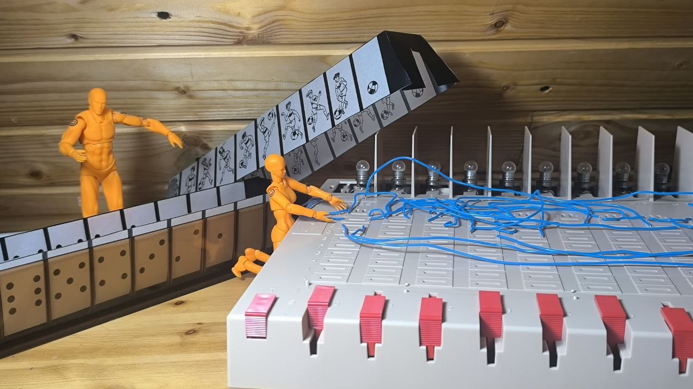
2. micro:bit family & BOB3
The BBC micro:bit is where block-based, then text-based, programming actually enters the picture — a small board with an LED matrix, buttons, and sensors, programmable through a simple drag-and-drop editor that gradually reveals real code underneath. BOB3 extends the idea into a small micro:bit-based robot, giving the same programming environment a physical body to control.
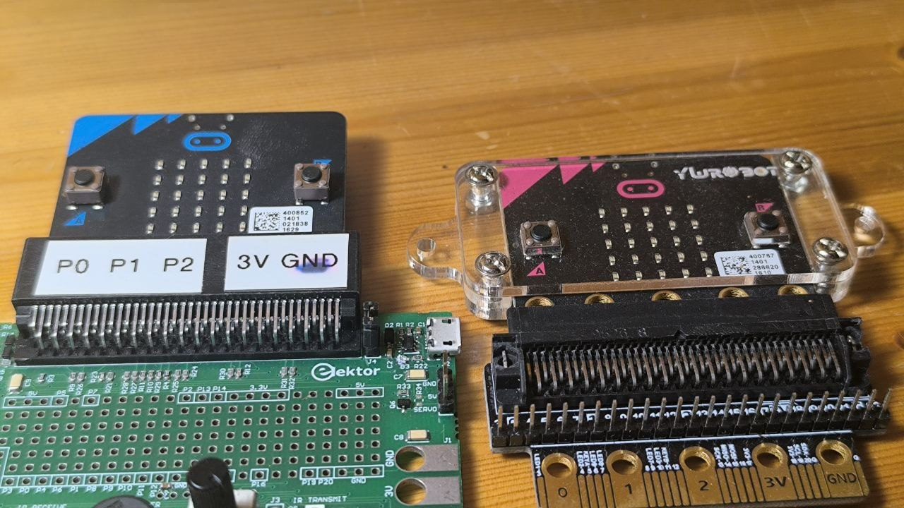
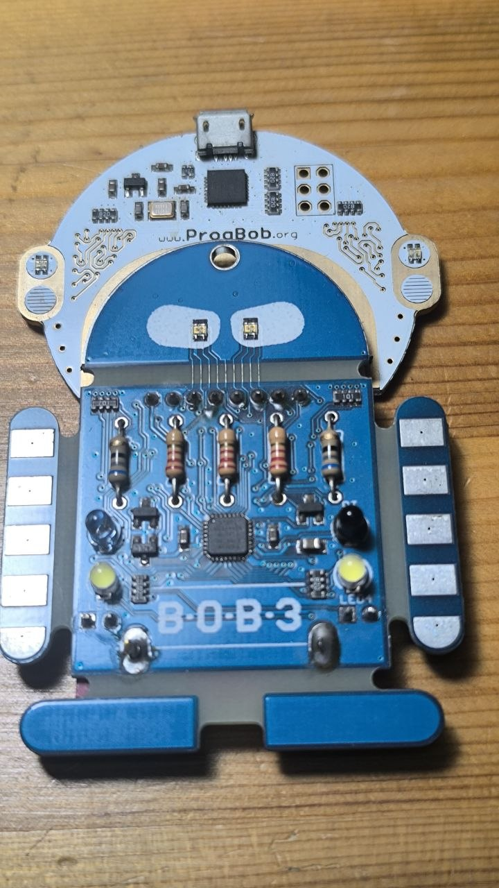
3. littleBits
Magnetic, color-coded electronic modules that snap together with no soldering and no wiring mistakes possible by design — power, sensors, wireless transmitters, motors, all as interchangeable blocks. My kids built small RC-controlled creations with the wireless modules, which was genuinely impressive for how approachable it made "building your own remote control" feel.
Worth a mention here: littleBits also made the cloudBit and its Cloud Control app, letting a physical module trigger internet actions — years before every consumer gadget claimed to be "smart." It was a genuinely ahead-of-its-time idea.
One small, genuinely funny detail: the 9V batteries that came in the original kit are still alive and working. The company is gone, the cloud service is gone, but the batteries are still going strong.
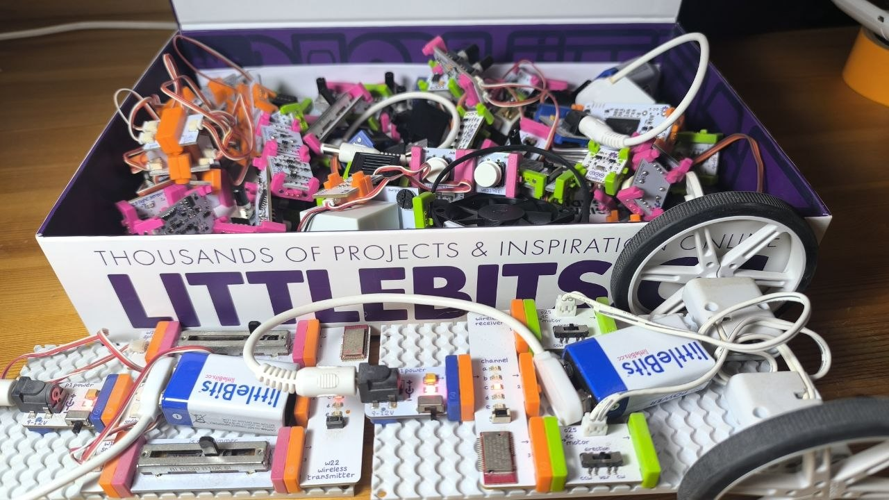
4. Makeblock Neuron
Makeblock's own take on the same magnetic-modular idea — an LED matrix, gyro sensor, servo driver, buzzer, and more, snapping together into an "Inventor Kit" aimed at teaching the same building-block logic as littleBits, with its own app-based programming layer on top.
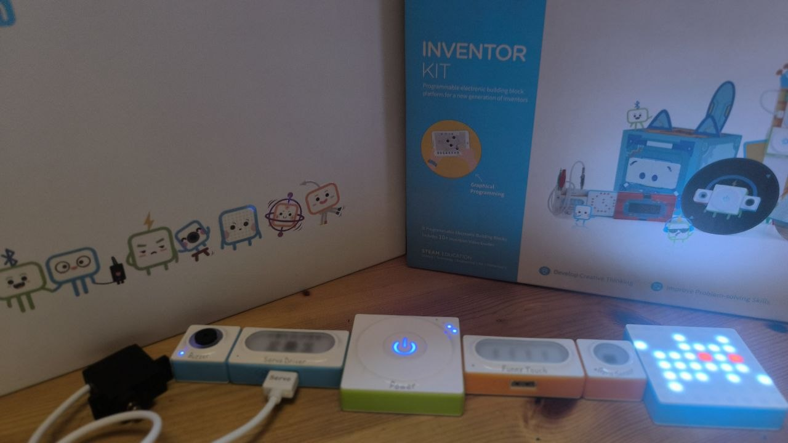
5. Makeblock mCookie
A second Makeblock modular line, cube-shaped rather than flat blocks, following the same magnetic snap-together philosophy as Neuron and littleBits. It followed a near-identical arc too — genuinely inventive hardware that ran out of software support well before the modules themselves wore out.
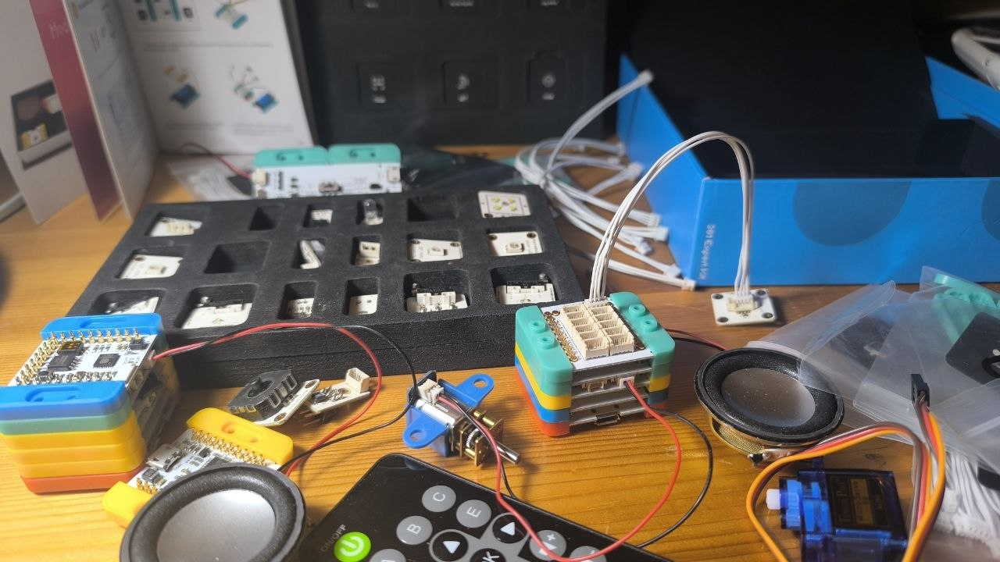
6. Conrad Wunderbar
Another modular prototyping kit in the same general family — color-coded blocks intended to connect to a cloud service ("Conrad Connect") for IoT-style projects, following the same pattern as the cloudBit before it.
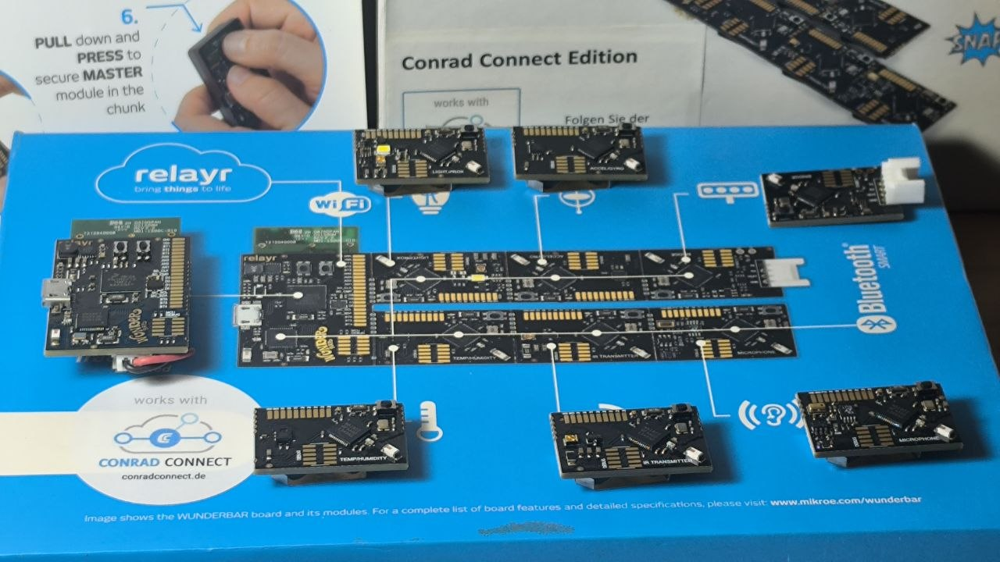
7. Kano family & Tech Will Save Us
Rounding out the shelf: the Kano Computer, Kano Pixel, and Kano Motion kits — build-your-own-computer and build-your-own-controller sets aimed at making the hardware itself, not just the code, something a kid assembles by hand — alongside a Tech Will Save Us Gamer Kit and Mover Kit, aimed at the same "build the thing before you use the thing" philosophy.
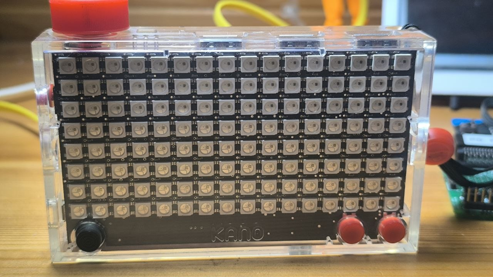
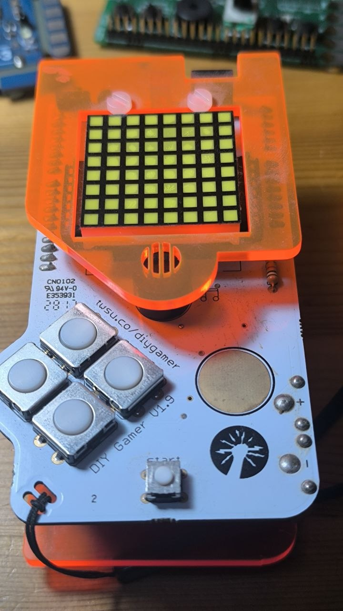
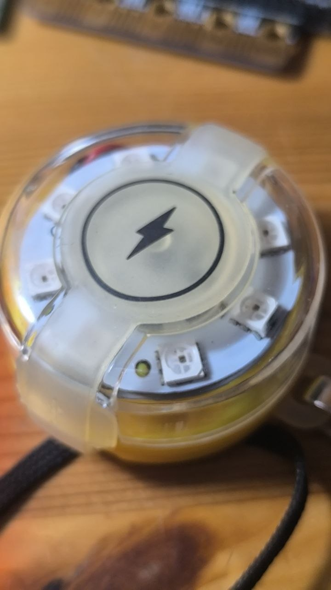
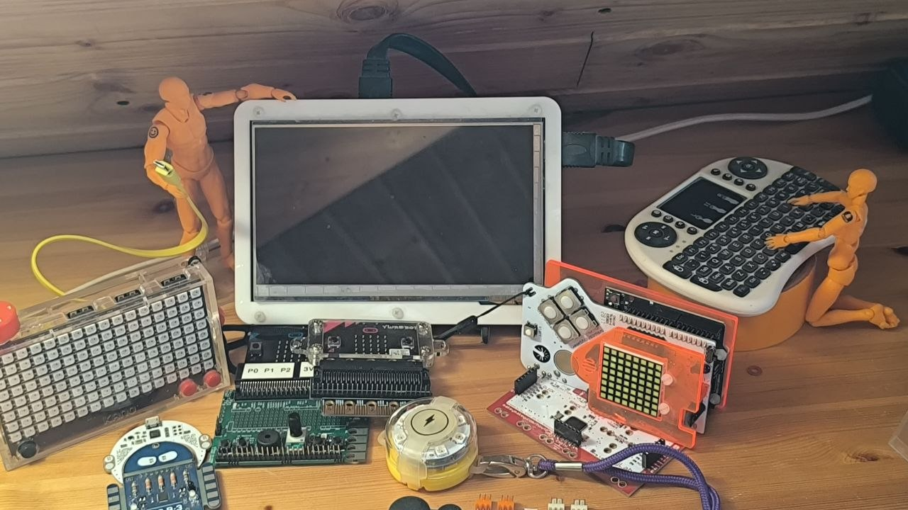
The part that didn't age well
Here's the honest footnote to all of this: the hardware on this shelf mostly still works exactly as well as it did on day one. What didn't survive is the software layer that made several of these genuinely smart — littleBits' Cloud Control, Makeblock's mCookie line, and similar companion apps and cloud services have quietly gone unmaintained or been discontinued outright. The physical modules are durable; the servers behind them, it turns out, are not part of the deal forever. It's a pattern worth remembering the next time "smart" is the selling point on a box.